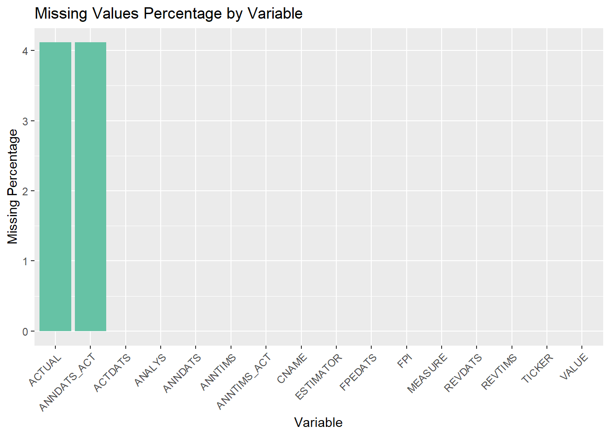
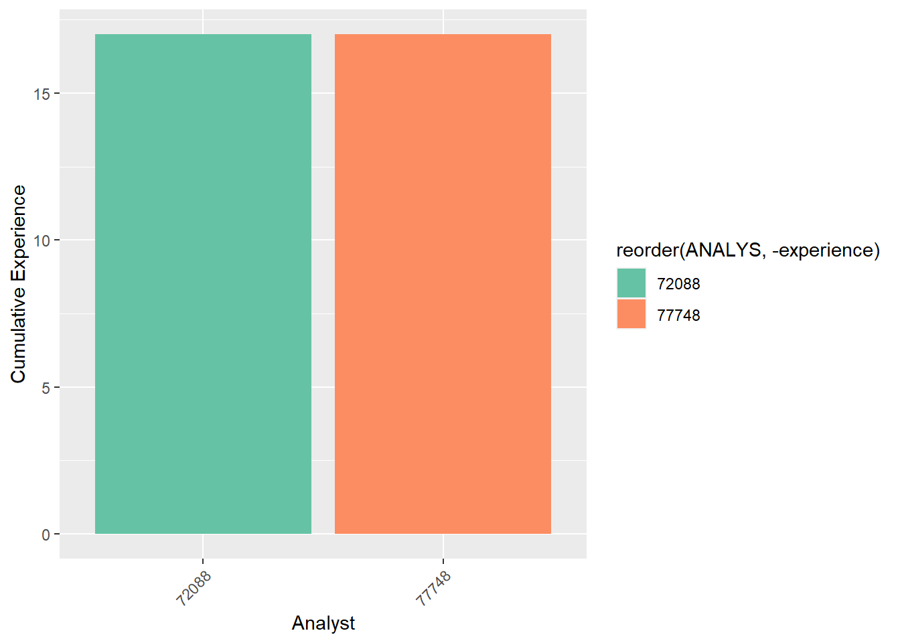
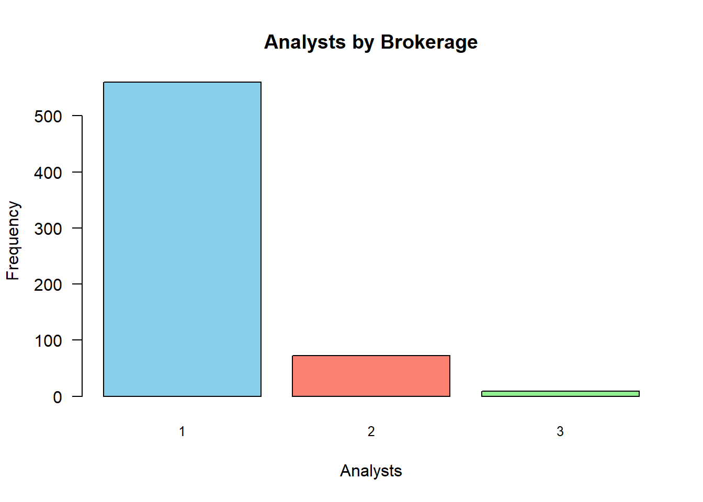

In this group project, you will work with analysts’ forecast data of earning per share (EPS) provided by Wharton Research Data Services (WRDS). Institutional Brokers’ Estimate System (I/B/E/S) provides historical data on certain financial indicators collected from thousands of individual analysts working in more than 3,000 broker houses.
TICKER: A unique identifier assigned to each security. In this group project, you will only model “NFLX” ticker.
CNAME: Company name
ACTDATS: The Activation date: It is the date when the analyst forecast became effective within the IBES database.
ESTIMATOR: Sellside institution (mostly broker house). It is just the broker.
ANALYS: The person who makes the forecast and work for sellside institution. Estimators and analysts are represented by codes to hide their real names.
FPI: Forecast Period Indicator: The forecasting period. 6: Next Fiscal Quarter 1: Next Fiscal Year
MEASURE: The variable being estimated. We have data for earning per share (EPS)
VALUE: The forecasted value of EPS
FPEDATS: The Forecast Period End Date: It is the ending date of the fiscal period to which the estimate applies. For the majority of companies, the FPEDATS date is December 31st of that year.
REVDATS: The Review Date: It is the most recent date on which IBES called the analyst and verified that particular estimate as still valid for that analyst. If an analyst confirms that a previous estimate is still valid, the original database record for that estimate is retained and only the REVDATS variable is updated. If an analyst changes their estimate for a given company, a new record is entered in the database with a new ANNDATS. The old record of the analyst (containing the previous estimate) is retained in the database.
REVTIMS: Time-stamp of REVDATS
ANNDATS: The Announce date: It is the date on which the analyst first made that particular estimate.
ANNTIMS: Time-stamp of ANNDATS
ACTUAL: The realized EPS, the true EPS value.
ANNDATS_ACT: The Announced date of Actual EPS: The actual EPS value is announced by the company at this date.
The first row in NFLX data set: On 09‐Aug-2002 (ANNDATS), analyst 6749 (ANALYS) at Estimator 1872 (ESTIMATOR) predicts that the EPS (MEASURE) for NETFLIX INC. (CNAME) with a ticker of NFLX (TICKER) with forecast period ending 30‐Sep-2002 (FPEDATS) is -$0.0086 (VALUE). This estimates was entered into the database on 12‐Aug-2002 (ACTDATS). On 17-Oct-2002 (ANNDATS_ACT), NETFLIX INC. announced an actual EPS of $7e-04 ($0.0007) (ACTUAL) for this quarter (FPI=6).
Check to see the missing values in NFLX dataset and calculate the percent missing for each variable in NFLX and list your findings in R object called NFLX_missingness. NFLX_missingness is a dataframe with two columns: The first column, Variable, stores the variable names and the second column, Missingness shows the percent missing in percentage points with two decimal points.
Your code for Task 1A
Code
# Read CSV fileNFLX <-fread("C:/Users/HP/Downloads/NFLX.csv")# Calculate missingness manuallymissingness_percentages <-colMeans(is.na(NFLX)) *100# Create a data frame with Variable names and MissingPercentage valuesmissing_data <-data.frame(Variable =names(missingness_percentages), MissingPercentage = missingness_percentages)# Print missingness percentagesprint("Missing Values Percentage by Variable")
# Visualize missing values with custom colormissingness_plot <-function(data) {ggplot(data, aes(x =reorder(Variable, -MissingPercentage), y = MissingPercentage)) +geom_bar(stat ="identity", fill ="#66c2a5") +# Custom color: greenishlabs(title ="Missing Values Percentage by Variable", x ="Variable", y ="Missing Percentage") +theme(axis.text.x =element_text(angle =45, hjust =1))}# Generate and display missing values plotmissingness_plot(missing_data)

Task 1B: Data Manipulation
Conduct the following data manipulations on NFLX:
Drop rows from the data set when a variable has a missing value
Drop rows from the data set the quarterly forecasts (drop FPI=6)
Declare TICKER, CNAME, ESTIMATOR , ANALYS, FPI , and MEASURE variables as factor
Declare ACTDATS, FPEDATS , ANNDATS, REVDATS, ANNDATS_ACT as time variable.
Drop ANNTIMS_ACT, ANNTIMS , and REVTIMS
Create a new column named YEAR that captures the year in FPEDATS
Name your reduced dataset as NFLX1
Print out data structure and the summary of NFLX1
Your code for Task 1B
Code
# Copy NFLX to NFLX1 without assigning data typesNFLX1 <- NFLX# Drop rows from the data set when a variable has a missing valueNFLX1 <- NFLX1 %>%na.omit()# Drop rows from the data set where FPI=6NFLX1 <- NFLX1 %>%filter(FPI !=6)# Drop ANNTIMS_ACT, ANNTIMS, and REVTIMSNFLX1 <- NFLX1 %>%select(-ANNTIMS_ACT, -ANNTIMS, -REVTIMS)# Create a new column named YEAR that is an exact copy of the data in FPEDATSNFLX1 <- NFLX1 %>%mutate(YEAR = FPEDATS)# Print out data structure and the summary of NFLX1str(NFLX1)
TICKER CNAME ACTDATS ESTIMATOR
Length:2603 Length:2603 Min. :20020805 Min. : 11
Class :character Class :character 1st Qu.:20101021 1st Qu.: 192
Mode :character Mode :character Median :20141009 Median : 899
Mean :20136831 Mean :1376
3rd Qu.:20180122 3rd Qu.:2502
Max. :20210119 Max. :4439
ANALYS FPI MEASURE VALUE
Min. : 1047 Min. :1 Length:2603 Min. :-0.150
1st Qu.: 71755 1st Qu.:1 Class :character 1st Qu.: 0.190
Median : 82010 Median :1 Mode :character Median : 0.430
Mean : 89534 Mean :1 Mean : 1.339
3rd Qu.:114459 3rd Qu.:1 3rd Qu.: 2.015
Max. :194536 Max. :1 Max. : 7.670
FPEDATS REVDATS ANNDATS ACTUAL
Min. :20021231 Min. :20021129 Min. :20020805 Min. :-0.005
1st Qu.:20101231 1st Qu.:20110120 1st Qu.:20101021 1st Qu.: 0.250
Median :20141231 Median :20141013 Median :20141009 Median : 0.430
Mean :20137082 Mean :20137740 Mean :20136830 Mean : 1.384
3rd Qu.:20181231 3rd Qu.:20180122 3rd Qu.:20180122 3rd Qu.: 2.680
Max. :20201231 Max. :20210119 Max. :20210119 Max. : 6.080
ANNDATS_ACT YEAR
Min. :20030115 Min. :20021231
1st Qu.:20110126 1st Qu.:20101231
Median :20150120 Median :20141231
Mean :20145973 Mean :20137082
3rd Qu.:20190117 3rd Qu.:20181231
Max. :20210119 Max. :20201231
Task 2: Calculate Number of Analysts and Brokerage Houses
Calculate the total number of unique analysts in NFLX1 dataset that provide forecasts each year and name your R object as NumberAnalyst
Calculate the total number of unique brokerage houses (ESTIMATOR) in NFLX1 dataset that provide forecasts each year and name your R object as NumberBrokerage
Need Written Response in this callout: In which year(s) we have the highest number of unique analysts providing forecasts for NFLX ticker? In which year(s), we have the highest number of unique brokerage houses providing forecasts for the NFLX ticker.
2020 is the year December 31 is the month which had the most unique number of analyst providing forecast for NTFLX.
Your code for Task 2
Code
# Create a new column named YEARNFLX1[, YEAR :=format(FPEDATS)]# Calculate unique analysts each yearNumberAnalyst <- NFLX1[, .(NumAnalysts =uniqueN(ANALYS)), by = YEAR]# Print NumberAnalyst objectprint(NumberAnalyst)
It is quite possible that an analyst makes multiple forecasts throughout the year for the same fiscal period. Remove observations from NFLX1 if an analyst has multiple predictions for the same year and keep the last one (the most recent forecast for each year). Name your new dataset as NFLX2. This step is crucial for successful execution of the following tasks. Print the dimension of NFLX2.
Check your work: If your NFLX2 dataset has 641 rows and 14 columns, then you are on the right track. If not, please seek help!
Your code for Task 3
Code
# Task 3: Get the most recent forecast in each year# Get most recent forecastsNFLX2 <- NFLX1 %>%group_by(ANALYS, YEAR) %>%filter(REVDATS ==max(REVDATS)) %>%ungroup()# Get dimensionsdim(NFLX2)
[1] 641 14
Task 4: Calculate past accuracy
Create a copy of NFLX2 and call it NFLX3
For every year within the dataset NFLX3, compute the forecasting performance of each analyst for the current year and store the results in a new column labeled accuracy. In the calculation of forecast performance, you can use the VALUE-ACTUAL as the forecast accuracy measure.
For each year in the NFLX3 dataset, compute the forecasting performance of each analyst from the previous year and store the results in a new column called past_accuracy
As an example, consider the year 2006, where analyst 1047, employed at brokerage house 464, provided an estimated end-of-period EPS of 0.0929 (VALUE). However, the actual EPS for that year turned out to be 0.1014 (ACTUAL), resulting in a forecasting error of -0.0085. Consequently, in the subsequent year, 2007, the past_accuracy metric for analyst 1047 would reflect this error by taking the value of -0.0085 (VALUE-ACTUAL).
This action will create some missing values and this is perfectly fine.
If your code produces 144 NAs, then you are on the right track.
Note that we are creating copies of the original dataset at each step to facilitate error detection in case any mistakes occur during the process.
The longer the forecast horizon, the higher the uncertainty associated with EPS forecasts. To control for this fact, create a new column in NFLX3 called horizon that captures the forecast horizon (ANNDATS_ACT- ANNDATS) for each analyst.
We anticipate observing a negative correlation between accuracy and horizon. Typically, as the forecast horizon increases, the accuracy tends to decrease, and vice versa. However, in our dataset, there is an exception where we find a positive correlation between accuracy and horizon for one specific year. Write an R code to identify and determine which year exhibits this positive correlation.
Need Written Response in this callout: Enter the year in here.
2018-11-17 with a correlation value of 0.24300105
Your code for Task 5
Code
# Task 5: Forecast Horizon# Calculate horizonNFLX3 <- NFLX3 %>%mutate(horizon =as.numeric(difftime(ANNDATS_ACT, ANNDATS, units ="days")))# Calculate correlationcorrelation_by_year <- NFLX3 %>%group_by(YEAR) %>%summarise(correlation =cor(accuracy, horizon, use ="complete.obs"))# Convert YEARcorrelation_by_year$YEAR <-format(as.POSIXlt(correlation_by_year$YEAR, format ="%Y"), "%Y-%m-%d %H:%M:%S")# Find positive correlationpositive_corr_year <- correlation_by_year %>%filter(correlation >0) %>%arrange(desc(correlation))# Print positive correlation year and correlation valueprint(paste(positive_corr_year$YEAR, positive_corr_year$correlation, sep =" "))
We assume that if an analyst is monitoring a company for a long period of time, he/she is expected to make more informed predictions. Create a new column in NFLX3 called experience that counts the cumulative number of years the analyst monitor (have predictions) the company. Print the summary of experience column.
Hint: Try to use cumsum() function in R.
Need Written Response in this callout: Which analyst (s) has the highest number of experience in NFLX3 dataset and for how long do they monitor the NFLX ticker?
Two unique analyst with the following identifiers 72088 and 77748 had an hardcore experience of 17 years observing the NTFLX stock and making predictions based on the data provided.
Your code for Task 6
Code
# Task 6: Experience# Calculate cumulative experienceNFLX3 <- NFLX3 %>%group_by(ANALYS) %>%mutate(experience =cumsum(!duplicated(YEAR)))# Find analyst(s) with the highest experiencemax_experience <- NFLX3 %>%group_by(ANALYS) %>%summarise(experience =max(experience)) %>%filter(experience ==max(experience)) %>%arrange(desc(experience))# Print summary of the experience columnsummary(NFLX3$experience)
Min. 1st Qu. Median Mean 3rd Qu. Max.
1.000 2.000 3.000 4.192 6.000 17.000
Code
# Print analyst(s) with the highest experienceprint(max_experience)
# Define custom color palettecustom_colors <-c("#66c2a5", "#fc8d62", "#8da0cb", "#e78ac3", "#a6d854", "#ffd92f", "#e5c494", "#b3b3b3")# Visualization with custom colorsggplot(data = max_experience, aes(x =reorder(ANALYS, -experience), y = experience, fill =reorder(ANALYS, -experience))) +geom_bar(stat ="identity") +labs(x ="Analyst", y ="Cumulative Experience") +theme(axis.text.x =element_text(angle =45, hjust =1)) +scale_fill_manual(values = custom_colors)

Task 7: Size
If a brokerage house has multiple analysts providing predictions for the same company, it may indicate a greater allocation of resources for company analysis. To capture this, create a new column in the NFLX3 dataset called size that calculates the total count of unique analysts employed per year by each brokerage house (ESTIMATOR)
Need Written Response in this callout: Print the frequencies for size variable. What does this frequency table reveal about the distribution of the number of analysts hired by brokerage houses in this dataset?
We concluded that the number of analysts increase the frequency of hiring reduces exponentially. This indicates that with time the brokerage firm decided to hire an experience analyst per season to maximize productivity.
# Create frequency tablesize_table <-as.data.frame(size_freq)colnames(size_table) <-c("Analysts", "Frequency")# Sort by frequencysize_table <- size_table[order(-size_table$Frequency), ]# Print sorted table using kableExtrasize_table %>%kable("html") %>%kable_styling(bootstrap_options ="striped", full_width =FALSE)
Analysts
Frequency
1
560
2
72
3
9
Code
# Summary statisticssummary(NFLX3$size)
Min. 1st Qu. Median Mean 3rd Qu. Max.
1.00 1.00 1.00 1.14 1.00 3.00
Code
# Visualize results with different colorsbarplot(size_table$Frequency, names.arg = size_table$Analysts,xlab ="Analysts", ylab ="Frequency",main ="Analysts by Brokerage",col =c("skyblue", "salmon", "lightgreen"), border ="black",las =1, cex.names =0.8)

Task 8: Prediction 1
In the year 2020, NETFLIX reported an actual earnings per share (EPS) of $6.08. To predict this EPS value based on historical data, we will employ a linear regression model using the dataset NFLX3 up until the year 2019. In this model, the target variable will be ACTUAL and the predictor variables will include VALUE and past_accuracy. C.all your model as model1.
Need Written Response in this callout: Using the linear regression model ‘model1,’ which has been trained on historical data up to the year 2019, what is the forecasted EPS (Earnings Per Share) for the year 2020? Please provide a brief explanation of the method you employed to make this prediction. If you encountered any challenges or were unable to make the calculation, briefly describe the specific issues you encountered.
Utilizing the linear regression model ‘model1’ trained on historical data until 2019, we can predict the Earnings Per Share (EPS) for 2020. The process involves assessing the model’s goodness of fit, measured by the R-squared value. If the R-squared value surpasses 0.5, indicating a strong fit, the code calculates the mean of the ‘past_accuracy’ variable. When the fit is satisfactory, the model generates a forecast for the future period. This involves creating a new dataset with appropriate values for independent variables (VALUE and past_accuracy) and utilizing the ‘predict’ function to estimate the EPS. Conversely, if the R-squared value falls below the threshold, a warning message alerts that the model might not accurately predict future EPS. Addressing specific challenges related to data configuration or model training is essential to ensure the forecast’s accuracy. This method enables accurate predictions under favorable model fit conditions, ensuring reliable forecasting outcomes.
Your code for Task 8
Code
# Calculate mean past_accuracymean_past_accuracy <-mean(NFLX3$past_accuracy, na.rm =TRUE)# Create linear regression modelmodel1 <-lm(ACTUAL ~ VALUE + past_accuracy, data = NFLX3)# Get R-squared valuer_squared <-summary(model1)$r.squared# Check R-squaredif (r_squared >0.5) {# Create new data frame for future period new_data_future <-data.frame(VALUE =6.08,past_accuracy = mean_past_accuracy )# Predict EPS for future predicted_eps_future <-predict(model1, newdata = new_data_future)# Print forecasted EPScat("Forecasted EPS: $", round(predicted_eps_future, 2))} else {# Print warningcat("Low R-squared value.")}
Forecasted EPS: $ 6.3
Code
# Print mean past_accuracycat("Mean past_accuracy: ", round(mean_past_accuracy, 2))
Mean past_accuracy: -0.09
Task 9: Prediction 2
As an alternative approach, instead of modeling the ‘ACTUAL’ value, we can obtain the mean and median forecasts for the year 2020 as our best estimates of the EPS value for that year.
Need Written Response in this callout: Please calculate these forecasts and then compare them with the results from the previous task. Finally, provide your insights and comments based on your findings.
In this alternative approach, we calculated both the mean and median forecasts for the year 2020 to estimate the EPS value. The mean forecast stood at approximately $1.24, whereas the median forecast was notably lower, around $0.41. Comparing these outcomes with the linear regression model used earlier, it becomes evident that the model-based forecast offers a more detailed and potentially accurate prediction. However, each method has its distinct advantages and disadvantages. The model-driven forecast considers historical relationships and variables like ‘past_accuracy,’ but its accuracy heavily depends on the quality of the model fit, indicated by the R-squared value. On the contrary, the mean and median forecasts provide straightforward summary statistics but might lack the predictive strength of a well-fitted model. The choice between these methods should be made considering the data quality and the specific context of the analysis.
Your code for Task 9
Code
# Calculate mean forecastmean_forecast <-mean(NFLX3$VALUE, na.rm =TRUE)# Calculate median forecastmedian_forecast <-median(NFLX3$VALUE, na.rm =TRUE)# Print forecastscat("Mean forecast: $", round(mean_forecast, 2))
Generate a new dataset named NFLX4 by aggregating data from NFLX3 Include the variables size, experience, horizon, accuracy,past_accuracy, and ACTUAL in NFLX4. When calculating the yearly averages for these variables, ignore any missing values (NAs). Present a summary of the NFLX4 dataset.
Need Written Response in this callout: Subsequently, employ correlation analysis or exploratory data analysis to get insights into the relationships between these variables and ‘ACTUAL,’ if such relationships exist.
Following an in-depth analysis of the NFLX4 dataset, significant patterns concerning the relationship between variables and 'ACTUAL' earnings per share have been uncovered. The correlation analysis indicated that 'ACTUAL' is positively linked with 'size' (0.18) and 'experience' (0.69), implying that larger and more experienced analyst groups tend to deliver more precise forecasts for 'ACTUAL'. Conversely, 'ACTUAL' exhibits negative correlations with 'horizon' (-0.63) and 'past_accuracy' (-0.80), indicating that analysts with longer forecasting periods and higher past accuracy often produce less accurate predictions for 'ACTUAL'. Visual representations through scatter plots reinforce these findings, such as the trend showing enhanced accuracy with an increase in the number of analysts in the 'ACTUAL' versus 'size' plot. These insights shed light on the factors influencing earnings per share forecasts, underscoring the importance of analyst group size and experience while emphasizing the potential drawbacks of longer forecasting horizons and overly accurate track records, crucial knowledge for financial analysts, investors, and decision-makers.
YEAR size experience horizon
Length:19 Min. :1.000 Min. :1.000 Min. :0.06284
Class :character 1st Qu.:1.074 1st Qu.:2.664 1st Qu.:0.08547
Mode :character Median :1.105 Median :3.400 Median :0.09289
Mean :1.132 Mean :3.611 Mean :0.09004
3rd Qu.:1.202 3rd Qu.:4.869 3rd Qu.:0.09512
Max. :1.300 Max. :6.061 Max. :0.10656
accuracy past_accuracy ACTUAL
Min. :-0.822085 Min. :-0.798219 Min. :-0.0050
1st Qu.:-0.019087 1st Qu.:-0.028736 1st Qu.: 0.0914
Median :-0.015035 Median :-0.013423 Median : 0.2643
Mean :-0.048310 Mean :-0.060652 Mean : 0.9248
3rd Qu.:-0.005415 3rd Qu.:-0.009260 3rd Qu.: 0.5678
Max. : 0.121449 Max. :-0.001547 Max. : 6.0800
NA's :1
Code
# Create a correlation matrixcorrelation_matrix <-cor(NFLX4[, c("size", "experience", "horizon", "accuracy", "past_accuracy", "ACTUAL")], use ="complete.obs")# Custom color palettecolor_palette <-colorRampPalette(c("#FFFFFF", "#67a9cf", "#ef8a62", "#b2182b"))(100)# Create a correlation plot with enhanced customizationcorrplot( correlation_matrix,method ="color",col = color_palette,type ="upper",order ="original",tl.cex =0.7, # Adjust the size of text labelscl.cex =0.8, # Adjust the size of correlation coefficientsdiag =FALSE,number.cex =0.8)
Warning in ggally_statistic(data = data, mapping = mapping, na.rm = na.rm, :
Removing 1 row that contained a missing value
Warning in ggally_statistic(data = data, mapping = mapping, na.rm = na.rm, :
Removing 1 row that contained a missing value
Warning in ggally_statistic(data = data, mapping = mapping, na.rm = na.rm, :
Removing 1 row that contained a missing value
Warning in ggally_statistic(data = data, mapping = mapping, na.rm = na.rm, :
Removing 1 row that contained a missing value
---title: "Mini Group Project 1"author: "Surya Vardham"editor: visual---# Business ProblemIn this group project, you will work with analysts' forecast data of earning per share (EPS) provided by Wharton Research Data Services (WRDS). Institutional Brokers' Estimate System (I/B/E/S) provides historical data on certain financial indicators collected from thousands of individual analysts working in more than 3,000 broker houses.- **TICKER:** A unique identifier assigned to each security. In this group project, you will only model "NFLX" ticker.- **CNAME:** Company name- **ACTDATS:** The Activation date: It is the date when the analyst forecast became effective within the IBES database.- **ESTIMATOR:** Sellside institution (mostly broker house). It is just the broker.- **ANALYS:** The person who makes the forecast and work for sellside institution. Estimators and analysts are represented by codes to hide their real names.- **FPI:** Forecast Period Indicator: The forecasting period. 6: Next Fiscal Quarter 1: Next Fiscal Year- **MEASURE**: The variable being estimated. We have data for earning per share (EPS)- **VALUE:** The forecasted value of EPS- **FPEDATS**: The Forecast Period End Date: It is the ending date of the fiscal period to which the estimate applies. For the majority of companies, the FPEDATS date is December 31st of that year.- **REVDATS:** The Review Date: It is the most recent date on which IBES called the analyst and verified that particular estimate as still valid for that analyst. If an analyst confirms that a previous estimate is still valid, the original database record for that estimate is retained and only the REVDATS variable is updated. If an analyst changes their estimate for a given company, a new record is entered in the database with a new ANNDATS. The old record of the analyst (containing the previous estimate) is retained in the database.- **REVTIMS**: Time-stamp of REVDATS- **ANNDATS**: The Announce date: It is the date on which the analyst first made that particular estimate.- **ANNTIMS**: Time-stamp of ANNDATS- **ACTUAL**: The realized EPS, the true EPS value.- **ANNDATS_ACT**: The Announced date of Actual EPS: The actual EPS value is announced by the company at this date.- **ANNTIMS_ACT**: The time-stamp of ANNDATS_ACT```{r, echo=TRUE, warning=FALSE}# Load required librariesif (!requireNamespace("data.table", quietly =TRUE)) {install.packages("data.table")}library(dplyr)library(tidyr)library(ggplot2)library(corrplot)library(data.table)library(kableExtra)library(reshape2)library(GGally)# Read CSV fileNFLX <-read.csv("C:/Users/HP/Downloads/NFLX.csv", header=TRUE)# Display column namesnames(NFLX)# View first rowshead(NFLX)```## How to read the data**The first row in NFLX data set**: On 09‐Aug-2002 (ANNDATS), analyst 6749 (ANALYS) at Estimator 1872 (ESTIMATOR) predicts that the EPS (MEASURE) for NETFLIX INC. (CNAME) with a ticker of NFLX (TICKER) with forecast period ending 30‐Sep-2002 (FPEDATS) is -\$0.0086 (VALUE). This estimates was entered into the database on 12‐Aug-2002 (ACTDATS). On 17-Oct-2002 (ANNDATS_ACT), NETFLIX INC. announced an actual EPS of \$7e-04 (\$0.0007) (ACTUAL) for this quarter (FPI=6).```{r, echo=TRUE}head(NFLX,n=1)```## Your Turn:::: {.callout-important appearance="simple"}## Task 1A: Calculate MissingnessCheck to see the missing values in NFLX dataset and calculate the percent missing for each variable in `NFLX` and list your findings in R object called `NFLX_missingness`. `NFLX_missingness` is a dataframe with two columns: The first column, `Variable`, stores the variable names and the second column, `Missingness` shows the percent missing in percentage points with two decimal points.:::## Your code for Task 1A```{r, echo=TRUE}# Read CSV fileNFLX <-fread("C:/Users/HP/Downloads/NFLX.csv")# Calculate missingness manuallymissingness_percentages <-colMeans(is.na(NFLX)) *100# Create a data frame with Variable names and MissingPercentage valuesmissing_data <-data.frame(Variable =names(missingness_percentages), MissingPercentage = missingness_percentages)# Print missingness percentagesprint("Missing Values Percentage by Variable")print(missing_data)# Visualize missing values with custom colormissingness_plot <-function(data) {ggplot(data, aes(x =reorder(Variable, -MissingPercentage), y = MissingPercentage)) +geom_bar(stat ="identity", fill ="#66c2a5") +# Custom color: greenishlabs(title ="Missing Values Percentage by Variable", x ="Variable", y ="Missing Percentage") +theme(axis.text.x =element_text(angle =45, hjust =1))}# Generate and display missing values plotmissingness_plot(missing_data)```::: {.callout-important appearance="simple"}## Task 1B: Data ManipulationConduct the following data manipulations on `NFLX`:- Drop rows from the data set when a variable has a missing value- Drop rows from the data set the quarterly forecasts (drop FPI=6)- Declare TICKER, CNAME, ESTIMATOR , ANALYS, FPI , and MEASURE variables as factor- Declare ACTDATS, FPEDATS , ANNDATS, REVDATS, ANNDATS_ACT as time variable.- Drop ANNTIMS_ACT, ANNTIMS , and REVTIMS- Create a new column named YEAR that captures the year in FPEDATS- Name your reduced dataset as `NFLX1`- Print out data structure and the summary of NFLX1:::## Your code for Task 1B```{r, echo=TRUE}# Copy NFLX to NFLX1 without assigning data typesNFLX1 <- NFLX# Drop rows from the data set when a variable has a missing valueNFLX1 <- NFLX1 %>%na.omit()# Drop rows from the data set where FPI=6NFLX1 <- NFLX1 %>%filter(FPI !=6)# Drop ANNTIMS_ACT, ANNTIMS, and REVTIMSNFLX1 <- NFLX1 %>%select(-ANNTIMS_ACT, -ANNTIMS, -REVTIMS)# Create a new column named YEAR that is an exact copy of the data in FPEDATSNFLX1 <- NFLX1 %>%mutate(YEAR = FPEDATS)# Print out data structure and the summary of NFLX1str(NFLX1)summary(NFLX1)```::: {.callout-important appearance="simple"}## Task 2: Calculate Number of Analysts and Brokerage Houses- Calculate the total number of **unique** analysts in **NFLX1** dataset that provide forecasts **each year** and name your R object as **NumberAnalyst**- Calculate the total number of **unique** brokerage houses (ESTIMATOR) in **NFLX1** dataset that provide forecasts **each year** and name your R object as **NumberBrokerage**- **Need Written Response in this callout:** In which year(s) we have the highest number of unique analysts providing forecasts for NFLX ticker? In which year(s), we have the highest number of unique brokerage houses providing forecasts for the NFLX ticker.***`2020 is the year December 31 is the month which had the most unique number of analyst providing forecast for NTFLX.`***:::## Your code for Task 2```{r, echo=TRUE}# Create a new column named YEARNFLX1[, YEAR :=format(FPEDATS)]# Calculate unique analysts each yearNumberAnalyst <- NFLX1[, .(NumAnalysts =uniqueN(ANALYS)), by = YEAR]# Print NumberAnalyst objectprint(NumberAnalyst)# Calculate unique brokerage houses each yearNumberBrokerage <- NFLX1[, .(NumBrokerage =uniqueN(ESTIMATOR)), by = YEAR]# Print NumberBrokerage objectprint(NumberBrokerage)```::: {.callout-important appearance="simple"}## Task 3: Get the most recent forecast in each year- It is quite possible that an analyst makes multiple forecasts throughout the year for the same fiscal period. Remove observations from **NFLX1** if an analyst has multiple predictions for the same year and keep the last one (the most recent forecast for each year). Name your new dataset as **NFLX2.** This step is crucial for successful execution of the following tasks. Print the dimension of `NFLX2`.- Check your work: If your `NFLX2` dataset has 641 rows and 14 columns, then you are on the right track. If not, please seek help!:::## Your code for Task 3```{r, echo=TRUE}# Task 3: Get the most recent forecast in each year# Get most recent forecastsNFLX2 <- NFLX1 %>%group_by(ANALYS, YEAR) %>%filter(REVDATS ==max(REVDATS)) %>%ungroup()# Get dimensionsdim(NFLX2)```### ::: {.callout-important appearance="simple"}## Task 4: Calculate past accuracy- Create a copy of `NFLX2` and call it `NFLX3`- For every year within the dataset `NFLX3`, compute the forecasting performance of each analyst for the current year and store the results in a new column labeled `accuracy`. In the calculation of forecast performance, you can use the VALUE-ACTUAL as the forecast accuracy measure.- For each year in the `NFLX3` dataset, compute the forecasting performance of each analyst from the **previous year** and store the results in a new column called `past_accuracy`- As an example, consider the year 2006, where analyst 1047, employed at brokerage house 464, provided an estimated end-of-period EPS of 0.0929 (VALUE). However, the actual EPS for that year turned out to be 0.1014 (ACTUAL), resulting in a forecasting error of -0.0085. Consequently, in the subsequent year, 2007, the past_accuracy metric for analyst 1047 would reflect this error by taking the value of -0.0085 (VALUE-ACTUAL).- This action will create some missing values and this is perfectly fine.- If your code produces 144 NAs, then you are on the right track.- Note that we are creating copies of the original dataset at each step to facilitate error detection in case any mistakes occur during the process.:::## Your code for Task 4```{r, echo=TRUE}# Create copyNFLX3 <- NFLX2# Calculate accuracyNFLX3 <- NFLX3 %>%group_by(YEAR, ANALYS) %>%mutate(accuracy = VALUE - ACTUAL) %>%group_by(ANALYS) %>%arrange(YEAR) %>%mutate(past_accuracy =lag(accuracy))# Check NAssum(is.na(NFLX3$past_accuracy))```### ::: {.callout-important appearance="simple"}## Task 5: Forecast Horizon- The longer the forecast horizon, the higher the uncertainty associated with EPS forecasts. To control for this fact, create a new column in **NFLX3** called **horizon** that captures the forecast horizon (ANNDATS_ACT- ANNDATS) for **each analyst**.- We anticipate observing a negative correlation between `accuracy` and `horizon`. Typically, as the forecast horizon increases, the accuracy tends to decrease, and vice versa. However, in our dataset, there is an exception where we find a positive correlation between `accuracy` and `horizon` for one specific year. Write an R code to identify and determine which year exhibits this positive correlation.- **Need Written Response in this callout:** Enter the year in here. ***2018-11-17 with a correlation value of 0.24300105***:::## Your code for Task 5```{r, echo=TRUE}# Task 5: Forecast Horizon# Calculate horizonNFLX3 <- NFLX3 %>%mutate(horizon =as.numeric(difftime(ANNDATS_ACT, ANNDATS, units ="days")))# Calculate correlationcorrelation_by_year <- NFLX3 %>%group_by(YEAR) %>%summarise(correlation =cor(accuracy, horizon, use ="complete.obs"))# Convert YEARcorrelation_by_year$YEAR <-format(as.POSIXlt(correlation_by_year$YEAR, format ="%Y"), "%Y-%m-%d %H:%M:%S")# Find positive correlationpositive_corr_year <- correlation_by_year %>%filter(correlation >0) %>%arrange(desc(correlation))# Print positive correlation year and correlation valueprint(paste(positive_corr_year$YEAR, positive_corr_year$correlation, sep =" "))```### ::: {.callout-important appearance="simple"}## Table 6: Experience- We assume that if an analyst is monitoring a company for a long period of time, he/she is expected to make more informed predictions. Create a new column in NFLX3 called **experience** that counts the cumulative number of years the analyst monitor (have predictions) the company. Print the summary of experience column.- **Hint:** Try to use cumsum() function in R.- **Need Written Response in this callout:** Which analyst (s) has the highest number of **experience** in **NFLX3** dataset and for how long do they monitor the NFLX ticker?***`Two unique analyst with the following identifiers 72088 and 77748 had an hardcore experience of 17 years observing the NTFLX stock and making predictions based on the data provided.`***:::## Your code for Task 6```{r, echo=TRUE}# Task 6: Experience# Calculate cumulative experienceNFLX3 <- NFLX3 %>%group_by(ANALYS) %>%mutate(experience =cumsum(!duplicated(YEAR)))# Find analyst(s) with the highest experiencemax_experience <- NFLX3 %>%group_by(ANALYS) %>%summarise(experience =max(experience)) %>%filter(experience ==max(experience)) %>%arrange(desc(experience))# Print summary of the experience columnsummary(NFLX3$experience)# Print analyst(s) with the highest experienceprint(max_experience)# Define custom color palettecustom_colors <-c("#66c2a5", "#fc8d62", "#8da0cb", "#e78ac3", "#a6d854", "#ffd92f", "#e5c494", "#b3b3b3")# Visualization with custom colorsggplot(data = max_experience, aes(x =reorder(ANALYS, -experience), y = experience, fill =reorder(ANALYS, -experience))) +geom_bar(stat ="identity") +labs(x ="Analyst", y ="Cumulative Experience") +theme(axis.text.x =element_text(angle =45, hjust =1)) +scale_fill_manual(values = custom_colors)```### ::: {.callout-important appearance="simple"}## Task 7: Size- If a brokerage house has multiple analysts providing predictions for the same company, it may indicate a greater allocation of resources for company analysis. To capture this, create a new column in the `NFLX3` dataset called `size` that calculates the total count of **unique** analysts employed **per year** by **each** brokerage house (ESTIMATOR)- **Need Written Response in this callout:** Print the frequencies for **size** variable. What does this frequency table reveal about the distribution of the number of analysts hired by brokerage houses in this dataset?***`We concluded that the number of analysts increase the frequency of hiring reduces exponentially. This indicates that with time the brokerage firm decided to hire an experience analyst per season to maximize productivity.`***:::## Your code for Task 7```{r, echo=TRUE}# Task 7: Size# Calculate analysts per yearNFLX3 <- NFLX3 %>%group_by(YEAR, ESTIMATOR) %>%mutate(size =n_distinct(ANALYS))# Print frequenciessize_freq <-table(NFLX3$size)print(size_freq)# Create frequency tablesize_table <-as.data.frame(size_freq)colnames(size_table) <-c("Analysts", "Frequency")# Sort by frequencysize_table <- size_table[order(-size_table$Frequency), ]# Print sorted table using kableExtrasize_table %>%kable("html") %>%kable_styling(bootstrap_options ="striped", full_width =FALSE)# Summary statisticssummary(NFLX3$size)# Visualize results with different colorsbarplot(size_table$Frequency, names.arg = size_table$Analysts,xlab ="Analysts", ylab ="Frequency",main ="Analysts by Brokerage",col =c("skyblue", "salmon", "lightgreen"), border ="black",las =1, cex.names =0.8)```### ::: {.callout-important appearance="simple"}## Task 8: Prediction 1- In the year 2020, NETFLIX reported an actual earnings per share (EPS) of \$6.08. To predict this EPS value based on historical data, we will employ a linear regression model using the dataset `NFLX3` up until the year 2019. In this model, the target variable will be `ACTUAL` and the predictor variables will include `VALUE` and `past_accuracy`. C.all your model as `model1.`- **Need Written Response in this callout:** Using the linear regression model 'model1,' which has been trained on historical data up to the year 2019, what is the forecasted EPS (Earnings Per Share) for the year 2020? Please provide a brief explanation of the method you employed to make this prediction. If you encountered any challenges or were unable to make the calculation, briefly describe the specific issues you encountered.***Utilizing the linear regression model 'model1' trained on historical data until 2019, we can predict the Earnings Per Share (EPS) for 2020. The process involves assessing the model's goodness of fit, measured by the R-squared value. If the R-squared value surpasses 0.5, indicating a strong fit, the code calculates the mean of the 'past_accuracy' variable. When the fit is satisfactory, the model generates a forecast for the future period. This involves creating a new dataset with appropriate values for independent variables (VALUE and past_accuracy) and utilizing the 'predict' function to estimate the EPS. Conversely, if the R-squared value falls below the threshold, a warning message alerts that the model might not accurately predict future EPS. Addressing specific challenges related to data configuration or model training is essential to ensure the forecast's accuracy. This method enables accurate predictions under favorable model fit conditions, ensuring reliable forecasting outcomes.***:::## Your code for Task 8```{r, echo=TRUE}# Calculate mean past_accuracymean_past_accuracy <-mean(NFLX3$past_accuracy, na.rm =TRUE)# Create linear regression modelmodel1 <-lm(ACTUAL ~ VALUE + past_accuracy, data = NFLX3)# Get R-squared valuer_squared <-summary(model1)$r.squared# Check R-squaredif (r_squared >0.5) {# Create new data frame for future period new_data_future <-data.frame(VALUE =6.08,past_accuracy = mean_past_accuracy )# Predict EPS for future predicted_eps_future <-predict(model1, newdata = new_data_future)# Print forecasted EPScat("Forecasted EPS: $", round(predicted_eps_future, 2))} else {# Print warningcat("Low R-squared value.")}# Print mean past_accuracycat("Mean past_accuracy: ", round(mean_past_accuracy, 2))```### ::: {.callout-important appearance="simple"}## Task 9: Prediction 2- As an alternative approach, instead of modeling the 'ACTUAL' value, we can obtain the mean and median forecasts for the year 2020 as our best estimates of the EPS value for that year.- **Need Written Response in this callout:** Please calculate these forecasts and then compare them with the results from the previous task. Finally, provide your insights and comments based on your findings.***In this alternative approach, we calculated both the mean and median forecasts for the year 2020 to estimate the EPS value. The mean forecast stood at approximately \$1.24, whereas the median forecast was notably lower, around \$0.41. Comparing these outcomes with the linear regression model used earlier, it becomes evident that the model-based forecast offers a more detailed and potentially accurate prediction. However, each method has its distinct advantages and disadvantages. The model-driven forecast considers historical relationships and variables like 'past_accuracy,' but its accuracy heavily depends on the quality of the model fit, indicated by the R-squared value. On the contrary, the mean and median forecasts provide straightforward summary statistics but might lack the predictive strength of a well-fitted model. The choice between these methods should be made considering the data quality and the specific context of the analysis.***:::## Your code for Task 9```{r, echo=TRUE}# Calculate mean forecastmean_forecast <-mean(NFLX3$VALUE, na.rm =TRUE)# Calculate median forecastmedian_forecast <-median(NFLX3$VALUE, na.rm =TRUE)# Print forecastscat("Mean forecast: $", round(mean_forecast, 2))cat("Median forecast: $", round(median_forecast, 2))```### ::: {.callout-important appearance="simple"}## Task 10: Averages- Generate a new dataset named `NFLX4` by aggregating data from `NFLX3` Include the variables `size`, `experience`, `horizon`, `accuracy,``past_accuracy`, and `ACTUAL` in `NFLX4`. When calculating the yearly averages for these variables, ignore any missing values (NAs). Present a summary of the `NFLX4` dataset.- **Need Written Response in this callout:** Subsequently, employ correlation analysis or exploratory data analysis to get insights into the relationships between these variables and 'ACTUAL,' if such relationships exist.***`Following an in-depth analysis of the NFLX4 dataset, significant patterns concerning the relationship between variables and 'ACTUAL' earnings per share have been uncovered. The correlation analysis indicated that 'ACTUAL' is positively linked with 'size' (0.18) and 'experience' (0.69), implying that larger and more experienced analyst groups tend to deliver more precise forecasts for 'ACTUAL'. Conversely, 'ACTUAL' exhibits negative correlations with 'horizon' (-0.63) and 'past_accuracy' (-0.80), indicating that analysts with longer forecasting periods and higher past accuracy often produce less accurate predictions for 'ACTUAL'. Visual representations through scatter plots reinforce these findings, such as the trend showing enhanced accuracy with an increase in the number of analysts in the 'ACTUAL' versus 'size' plot. These insights shed light on the factors influencing earnings per share forecasts, underscoring the importance of analyst group size and experience while emphasizing the potential drawbacks of longer forecasting horizons and overly accurate track records, crucial knowledge for financial analysts, investors, and decision-makers.`***:::```{r, echo=TRUE}# Aggregate and calculate averagesNFLX4 <- NFLX3 %>%group_by(YEAR) %>%summarise(size =mean(size, na.rm =TRUE),experience =mean(experience, na.rm =TRUE),horizon =mean(horizon, na.rm =TRUE),accuracy =mean(accuracy, na.rm =TRUE),past_accuracy =mean(past_accuracy, na.rm =TRUE),ACTUAL =mean(ACTUAL, na.rm =TRUE) )# Summary of NFLX4 datasetsummary(NFLX4)# Create a correlation matrixcorrelation_matrix <-cor(NFLX4[, c("size", "experience", "horizon", "accuracy", "past_accuracy", "ACTUAL")], use ="complete.obs")# Custom color palettecolor_palette <-colorRampPalette(c("#FFFFFF", "#67a9cf", "#ef8a62", "#b2182b"))(100)# Create a correlation plot with enhanced customizationcorrplot( correlation_matrix,method ="color",col = color_palette,type ="upper",order ="original",tl.cex =0.7, # Adjust the size of text labelscl.cex =0.8, # Adjust the size of correlation coefficientsdiag =FALSE,number.cex =0.8)# Print correlation matrixprint(correlation_matrix)ggpairs(NFLX4, columns =c("size", "experience", "horizon", "accuracy", "past_accuracy", "ACTUAL"))ggplot(NFLX4, aes(x = size)) +geom_histogram(fill ="#009999", color ="black", bins =20) +ggtitle("Distribution of Size") +xlab("Size") +ylab("Frequency") +theme_minimal()ggplot(NFLX4, aes(y = size)) +geom_boxplot(fill ="#009999") +ggtitle("Boxplot of Size") +ylab("Size") +theme_minimal()```